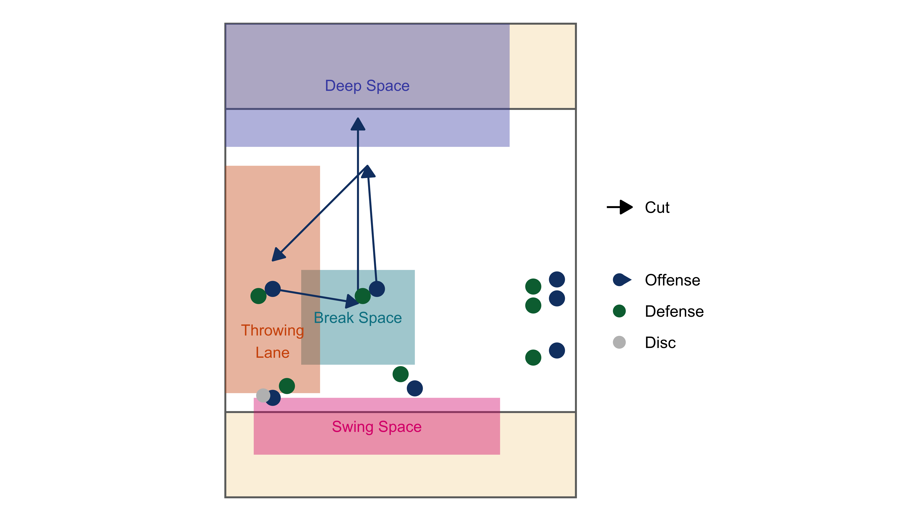
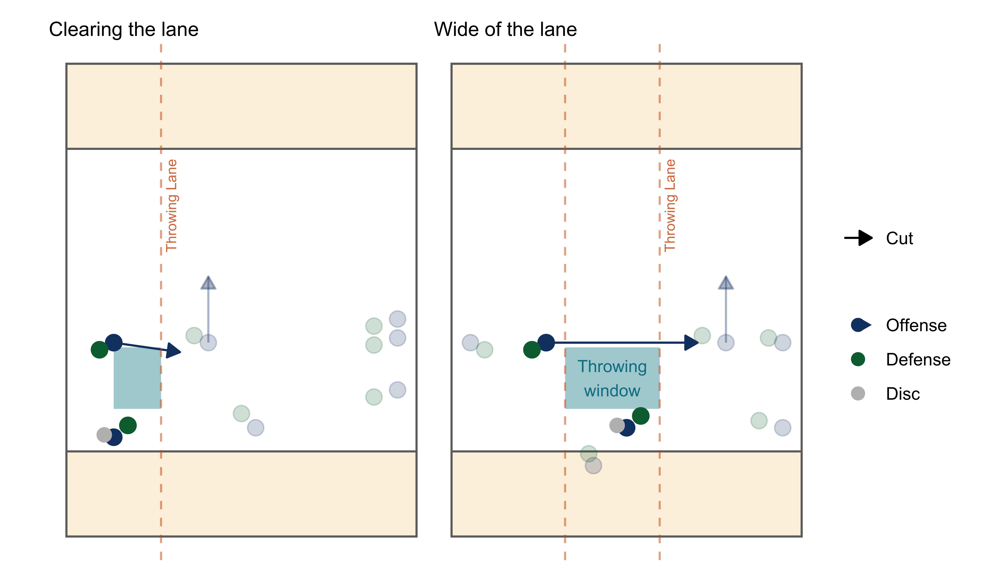
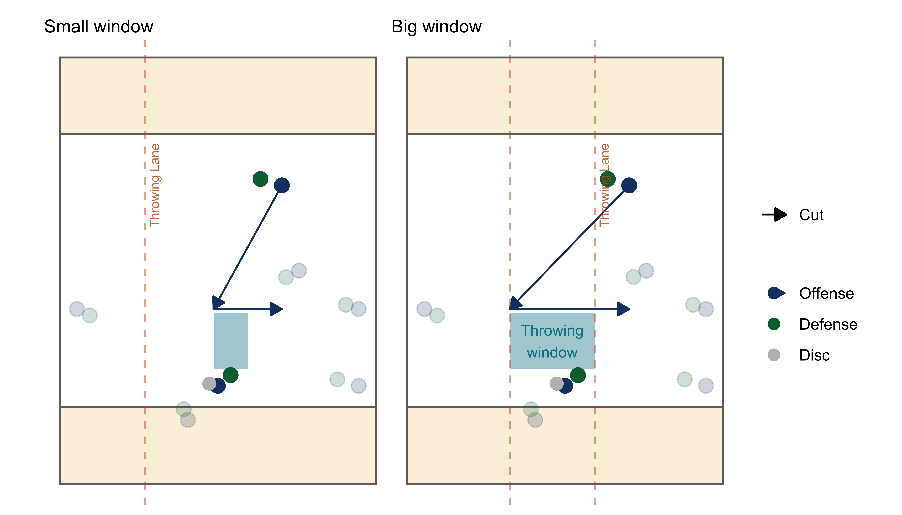
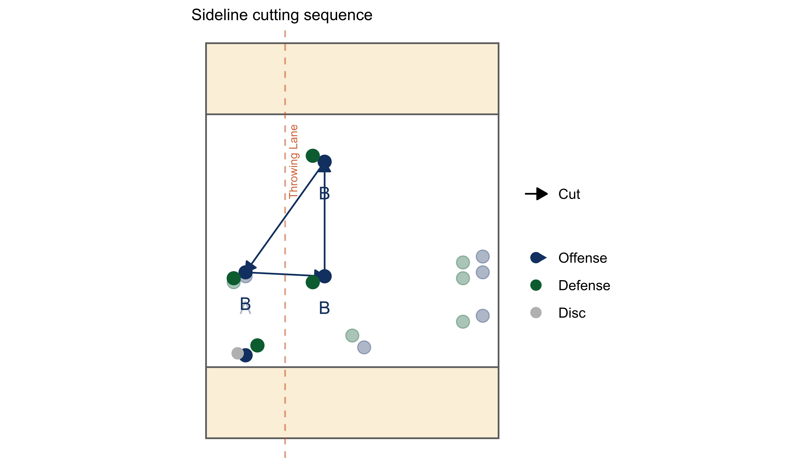
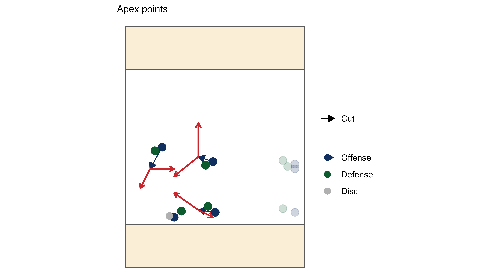
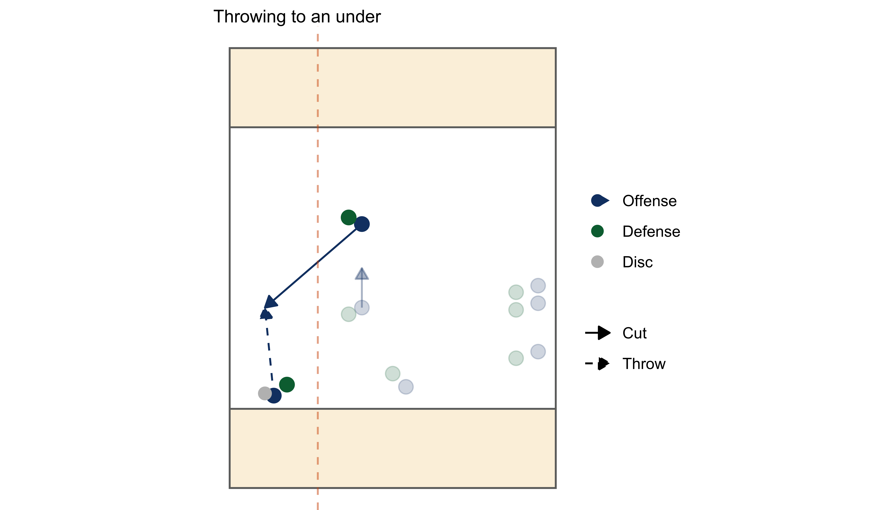
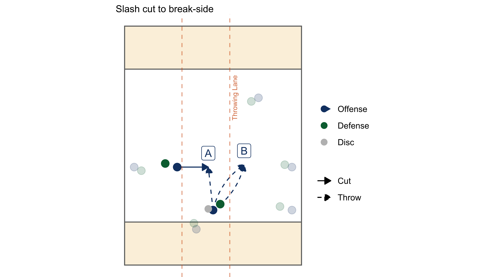

Offence Principles
Philosophy
Hillhead’s offence is built on disciplined possession and positive, attacking play that prioritises moving the disc into valuable spaces on the field. Isolated cutters create opportunities for big gains and break-side continuation. This is complemented by handler-driven flow that keeps the disc moving to stretch the defence and open up new attacking angles. This strategy emphasises intelligent movement, anticipation of play and strong communication, ensuring the disc stays safely in motion until a high-value opening presents itself.
Structure and spacing
Identify active spaces
Active spaces are the areas on the field where we typically look to make low risk, positive passes. Often, but not always, in this order of preference:
- Deep space: To score
- Break space: To open up break-side continuation
- Throwing lane: Easy up-field pass
- Swing space: To open up bigger active spaces
Isolate active cutters
Ideally, we want 1 or 2 active cutters in front of the disc, attacking the up-field active spaces. Other players on the field should give them space and time to cut.
Isolate the reset handler
The reset handler provides support when there are no up-field options. They offer positive up-field cuts or a route to move the disc laterally through the swing space. Other players should not encroach on the reset or cut into their space. Give them room a swing pass or to cut up the line.
Continuation cutters / handlers
Continuation cutters and handlers should stay out of active spaces. Their job is to create space while anticipating their turn to become active when the disc moves or an active player clears out. You need to be disciplined in creating space and trust the active players to do their job.
You also need to look like a threat. If you are too static then your defender will be able to poach the active spaces. Keep moving, put in a few fake cuts, and be ready to attack if an opportunity arises.
Keep the active spaces clear
- Leave space to throw into
- Leave space for active cutters to attack
- Active cutters cannot hang around in attacking spaces - clear quickly!
Cutting and movement
Active cutters
Active cutters are the players in front of the disc trying to make big up-field gains. When you are active, you need to cut aggressively and avoid clogging the active spaces.
Use big cutting shapes that maximise gains and make it obvious to the thrower which spaces you are attacking. You can still change speed and direction to lose your mark but avoid dancing when attacking active space. Actively engage with the thrower via vocal communication, pointing, eye contact etc. The three cutting shapes we use the most are outlined below.
Going deep
Always cut to score if the throw is on. Your defender has to respect this, even if you don’t get the disc it may open up a big space to cut under.
- Start from shallow to allow the disc to be thrown into space
- Stay wide of the throwing lane when cutting
- Keep the lane clear for throws
- Allows you to see the disc in flight
- Adjust when the disc is in flight
- Clear or cut under if you don’t get the disc

Coming under
If you threaten deep, you will find that space opens up for you underneath. Aim for big gains and clear early if the throw isn’t on.
- Cut under at an angle to the throwing lane
- Larger margin of error on the throw
- Less time spent clogging the throwing lane
- Better continuation options after a catch
- Clear the lane early if you don’t get the disc
- Small gains on the open side are not very valuable*
- Clear space for the next cut
*Unless it’s a high stall or the only option to get the disc moving.

Slash to the breakside
The slash cut is a powerful move that can open up the break-side and create opportunities for easy continuation passes.
- Make a lateral cut across the throwing lane to the break side
- Attack the break-side
- Clear the lane for throws to other cuts
- When possible, start wide of the lane, to create a big throwing window for the inside throw
- The thrower can throw into space
- The thrower doesn’t need to take on the force
- Clear to the inactive side or attack deep if you don’t get the disc

You can link an under cut to a slash cut. Finish your under cut wide on the open side to create a big throwing window for your slash cut.

Cutting sequences
The cutting shapes above can be linked together in a powerful cutting sequence. For example, you can start with a deep cut on the break side, come under on an angle to the lane, slash to the break-side, then go deep again. By linking cuts into sequences you give yourself multiple chances to get open for the thrower. Each change of direction is an opportunity to lose your defender, so turn sharply, explosively and use misdirection to your advantage.

Some offence structures use multiple active cutters. In this case, you also need to think about the timing of your cutting sequence:
- Cut in different moments and directions to create multiple options for the thrower
- Cut to free up space for your teammate to attack
- Delay your cut or change of direction until your teammate has cleared the throwing lane and the space you want to attack
In the example below, cutter B starts wide to create a throwing window for a slash cut from A. Because A starts in the throwing lane, B drifts up-field but delays the attacking cut deep until A has cleared the lane.

The cutting shapes above are a good starting point for learning how to cut as they are often the most effective options for attacking the active spaces. However, they are not the only options and it is important to react to the spaces on the field and the positions of defenders. Be creative and adapt your cutting accordingly.
Sometimes it gets messy; the defence clogs spaces; the thrower is under pressure; your teammates are running into each other; and it’s impossible to find the right cut. Be patient, stick to good cutting principles, work hard to create space and find the best positions to launch an attacking cut.
Setting up a cut
Good cutting isn’t just about speed and effort, it also requires good positioning, timing and intention. The best cutters don’t just run into open space, they create that space first. This preparatory movement is what we refer to as setting up.
A good set up allows you to:
- Get separation from your defender
- Launch your attack from a strong position (think about the ideal launch points for the cutting shapes above)
- Launch your attack at the right time
Setting up can take many forms depending on the situation. It might be as simple as positioning yourself between your defender and the space you want to attack, or drifting into areas that open up better cutting angles. At other times, it requires more work, aggressively clearing space to reposition yourself, or explosively changing direction to shake your mark.
Active cutters have very little time to set up, usually one or two quick movements before they have to attack space or clear out. This is especially true when starting from a static position or when the disc moves and the active space changes.
Continuation cutters have more opportunity to prepare. By using areas outside of the active space and anticipating the flow of play, they can launch attacking active cuts at the right time and from a strong position.
Get separation from your defender
- Use your body to seal your defender off from the space you want to attack
- Use change of speed and change of direction to get separation
- Get your defender off balance or committing in one direction, then attack against their momentum
Launch your attack from a strong position:
- Find the right launch point for your attacking cut e.g
- Going deep: Shallow and wide of the lane
- Coming under: Deep and wide of the lane
- Slash: Open side and wide of the lane
- Find apex points: Positions with multiple attacking options that are difficult for your defender to cover e.g
- A deep strike or a big gain under
- An open under or a big break side window
- A handler strike up the line or attacking the swing space

Launch your attack at the right time:
Timing your attacking cut is crucial for getting open and maximising the space to throw into. Use these cues to time your cut:
- As a receiver catches the disc
- Be the immediate continuation option for a thrower. Time your cut to be open and attacking space as the receiver is ready to throw:
- Going too early shrinks the throwing window and makes the throw more difficult or less advantageous
- Going too late stifles flow as there is no immediate option for quick continuation, allowing the defence to recover
- Be the immediate continuation option for a thrower. Time your cut to be open and attacking space as the receiver is ready to throw:
- As a thrower fakes
- If you aren’t in a position for immediate continuation, try to set yourself up for the thrower’s second look.
- Anticipate the thrower faking to an active cut and looking for the next option
- Good fakes can cause defenders to over-commit and open up new spaces to attack
- As an active cutter clears
- Ensures the active space is free to attack
- Gives an immediate backup option for the thrower
Keep the active spaces clear
- Active cutters
- Use a quick set up to get free or create a better cutting angle
- Don’t clog the active space with small movements or by being indecisive about your cut. If you are in the active space, you need to be attacking it or clearing out*
- Continuation cutters
- Set up a cut without interfering with active cutters/spaces
- Pull out of an attacking cut early if it’s not a good option
*The exception here is when you are unmarked e.g in a zone or a poach. If you are wide open, it is often best to just stay still and let the thrower hit you.
Throwing to active spaces
The attacking nature of our offence is built into the system and the active spaces we use on the field. Our cutters are responsible for creating these spaces through disciplined cutting, spacing and timing. This reduces pressure on throwers to take risks or force the disc through small windows. While there is room for creativity, there is no need to be risky or overly-aggressive. Instead, the focus is on accuracy, timing, and leading receivers into good continuation options.
Here are some key pointers for throwing to our preferred cutting shapes:
Throwing to deep cuts
- Throw early and into space for the receiver to run down at speed
- Shape the throw into the receiver’s path and away from defenders
- Keep the disc in the receiver’s vision
- Avoid throwing over their head

Throwing to under cuts
When throwing to under cuts, the key is to throw into the space the receiver is attacking rather than directly at them. This allows the receiver to adjust if the throw is slightly off target.

Throwing to the break side
Why do we want to throw to the break side?
- Catches have less defensive pressure as the receiver’s defender is on the wrong side
- To escape the areas where the defence is most concentrated and cloggingg space
- To create opportunities for immediate break-side continuation
- While the defence is on the wrong side
Because big gains are made on the continuation pass, the break side throw should be low-risk and set the receiver up for the next throw.
- Throw into big windows
- Avoid squeezing the disc into tight spaces or between defenders
- Try to lead the receiver into good break side continuation options
When throwing to the slash cut there are two main options:
- A: Throw up the lane into the cutter’s chest and allow their momentum to carry them to the break-side
- Easier option as still an open-side throw but leads the receiver to the break-side
- B: Take on the force and float the disc into the break-side for the receiver to run onto
- Need to break the force but can lead the cutter further to the break-side and slightly up-field, creating better angles and more time for continuation passes

Continuation and flow
Continuation and flow are the principles that keep our offence moving without letting the defence settle.
- Continuation is the act of immediately following up a completed pass with another well-timed throw, taking advantage of the space and momentum just created
- Flow is the overall movement of the disc and players in a connected, rhythmic way that maintains offensive momentum, opens up new angles, and keeps the defence on its toes
When a pass is made, try to keep the disc moving quickly and safely to maintain momentum. This might be a quick continuation throw to a well timed cut or some small-ball movement with players in close proximity. This keeps the offence flowing, creates space up-field and exploits gaps while the defence is still recovering.
- Catch and move into a throwing motion
- Ready to hit a quick continuation pass if it’s on
- OR: Throw a believable fake to shift the defence and open up another space to attack
- Hit the first open pass
- Maintain flow by continuing to move the disc quickly
- You might not get a better option
- Just move the disc and encourage better cutting options in future
- Don’t wait for cuts if nothing is happening up-field
- Engage your reset
- Hit the pass in front of you
- Look for immediate continuation options within your field of vision
- Prioritise passing to players moving in the direction of attack
- Use throw and go moves and give the disc to advancing handlers
- Find power positions
- Power positions are catching positions where the receiver’s momentum allows them to throw quick continuation throws without a force
- Often generated from up-the-line cuts, leading break throws and big swings
- Cutters be ready to attack deep!
- Attack the breakside
- Throws to the breakside open up big continuation spaces
- Try to move the disc quickly after a break throw to take advantage
When flow breaks down
When flow breaks down, get back into structure quickly. Position your reset and active cutters and look to attack the active spaces or engage the reset.
Be patient. Keeping possession is the key to a successful offence. Moving the disc quickly and taking on throws to big spaces should not be confused with taking high risk options. We are happy to maintain possession until a good attacking opportunity presents itself.
Throwing to the swing space
Throw leading passes for swing space continuation